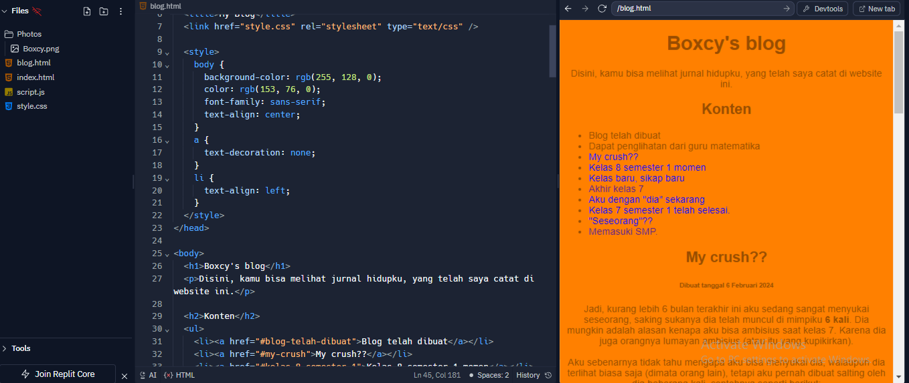

Disini, kamu bisa melihat jurnal hidupku, yang telah saya catat di website ini.
Sekarang aku belajar coding!! Jadi dari belajar coding aku bisa membuat permainan, dan website seperti ini!! Jika kamu ingin melihat coding seperti apa, coding itu seperti ini:
Jadi aku seperti sedang belajar sebuah bahasa, bahasa untuk komputer. Jadi semakin jago aku coding, website ini akan semakin bagus!! Untuk sekarang, websitenya seperti ini dahulu dan akan bertambah bagus seiring waktunya.
Karena blog ini masih baru, jadinya blog-blog sebelumnya teksnya sedikit karena baru saja aku bikin, tetapi setelah ini aku akan membuat bk=log yang lebih panjang.
Jadi, kurang lebih 6 bulan terakhir ini aku sedang sangat menyukai seseorang, saking sukanya dia telah muncul di mimpiku 6 kali. Dia mungkin adalah alasan kenapa aku bisa ambisius saat kelas 7. Karena dia juga orangnya lumayan ambisius (atau itu yang kupikirkan).
Aku sebenarnya tidak tahu mengapa aku bisa menyukai dia, walaupun dia terlihat biasa saja (dimata orang lain), tetapi aku pernah dibuat salting oleh dia beberapa kali, contohnya seperti berikut:
Tetapi walaupun aku sangat, sangat menyukai dia, aku tidak ingin pacaran dengannya (karena trauma kelas 7), dan juga aku tau pasti dia tidak akan menyukai-ku juga, karena sayangnya sekarang dia sedang sangat menyukai seseorang juga, dan ternyata seseorang itu saat kelas 7 dekat sekali dengan crush-ku. Dan juga aku kalah besar dengannya, karena dia memang lebih sempurna daripada aku...
Disamping itu, aku juga yakin kalau dia selalu mendoakan seseorang tersebut agar seseorang tersebut menjadi dia, dan itu membuatku sedikit sedih. Saat semester 1 juga aku sudah melakukan semaksimal mungkin agar dia tertarik denganku, namun sayangnya, dia tetap tidak tertarik denganku. Jadi sekarang aku sudah menyerah mendekati dia, aku hanya bisa menyukai dia secara diam-diam.
Apa momen-momen yang aku dapatkan dari keals 8 semester 1 ini? entahlah, aku sudah lupa semuanya sama halnya dengan apa yang terjadi pada saat kelas 7 lalu, tetapi di semester ini aku belajar banyak! Sesuai dengan tujuanku untuk kelas ini yaitu untuk lebih ambisius dalam belajar.
Aku berterima kasih banyak dengan website "Khan Academy", tanpa website tersebut, bisa saja aku tidak selamat dari semester 1 kelas 8 ini. Berkat website tersebut, aku sudah menamatkan matematika kelas 8 sampai kelas 11!!! Aku berhutang banyak dengan website tersebut, dan aku berjanji jika suatu hari nanti kalau aku sukses, aku akan membayar kebaikannya website tersebut.
Terakhir, aku mulai menyukai seseorang sekarang, akan aku jelaskan di blog berikutnya.
Aku sudah memasuki kelas 8 sekarang, jadi aku memutuskan untuk mencoba menjadi diri yang lebih baik lagi di kelas ini dan tidak melakukan hal yang fatal yang telah aku lakukan pada saat kelas 7. Di kelas 8 ini, aku ingin lebih ambisius dalam hal belajar untuk mendapatkan piagam yang aku inginkan, agar aku bisa memasuki sekolah SMA impianku.
Akhirnya kelas 7 telah berakhir!!! Aku telah tersiksa di kelas 7 dan akhirnya aku naik kelas!!!!
Sekarang aku dengan "dia" sudah tidak terlalu dekat seperti dulu, karena suatu kesalahpahaman, aku sudah tidak berteman dengan dia. Tetapi disisi lain, aku merasa sedikit lebih lega karena aku sudah tidak berteman lagi dengan dia karena berteman dengan dia "sedikit" merepotkan.
Akhirnya semester 1 selesai juga, apa yang aku pelajari saat aku semester 1? aku tidak ingat sama sekali, dan juga aku malas untuk membuat teks, jadi segini saja dulu.
Sudah beberapa bulan telah berlalu, sudah banyak kejadian yang terjadi padaku pada kelas 7 ini, saat aku memasuki kelas 7 untuk pertama kalinya, aku tidak punya teman sekitar 1 bulan pertama, kebanyakan waktu aku hanya menyendiri di dalam kelas.
Namun, sekarang aku sedang dekat dengan seorang perempuan, tidak akan aku ucapkan nama orang tersebut untuk menghargai privasinya. Aku dekat dengan perempuan tersebut, entahlah aku tidak ingin menceritakan banyak tentang dia karena sedikit... aneh..
Akhirnya aku bebas dari SD, sekarang aku sudah remaja dan memasuki SMP. Jujur, aku tidak ingat sama sekali apa yang aku lakukan pada saat SD dulu, aku tidak ingat temanku siapa saja, aku seringnya bermain dengan siapa, dll. Pokokny aku gainget satu hal pun saat aku SD.
Namun, karena aku sudah SMP, aku ingin mengubah semua itu, aku akan cari minat dan bakatku, aku bisa melakukan apa saja, dan juga mencari teman-teman baru di masa-masa SMP ini.